CineGrade AI 会把参考电影剧照的调色、对比度和氛围套用到你的照片上。上传要编辑的照片和风格参考，AI 会读取参考的色彩方向，并把原照片转换为那种新的色调。
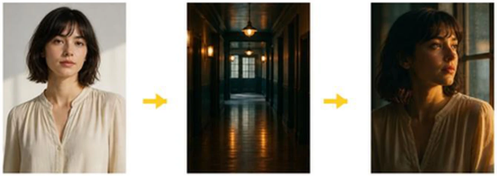
因为可以在保持照片构图与主体的同时，快速只改变色彩与氛围。适合在正式调色前测试 look，或以最短周转向客户展示多个色调候选。
构图、主体和姿态 与原图一致 —— 只有色彩、对比度和氛围改变。无需重搭镜头即可快速测试调色方向。
在进入正式调色环节之前先模拟想要的 look —— 减少决策轮次，也减少花在最终环节的时间。
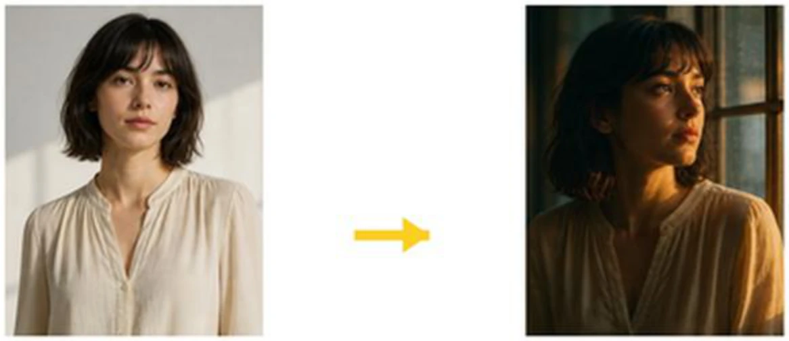
当你想用单张参考匹配电影感 look、广告活动调性、lookbook 氛围或社媒视觉色调时，使用 CineGrade AI。非常适合统一多个镜头的色彩方向，或用完全不同类型的氛围来测试素材。
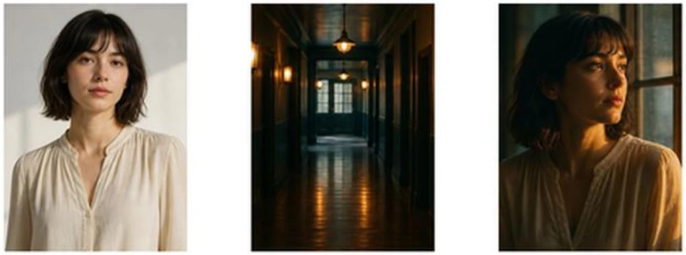
用单帧参考为照片套上电影剧照风格的调色与对比度。
把活动主视觉的色彩延展到其他镜头，保持视觉一致性。
对齐多个镜头的色彩方向，让整个 lookbook 保持同一氛围。
作为快速调色匹配工具，保持整个 feed 一致的色彩识别。
把同一素材立即试成黑色电影、暖调、冷调或生物色彩等类型氛围。
在正式调色前快速生成用于决策的色调候选。
点击左侧竖排菜单中的魔杖图标，该入口通向 CineGrade AI 功能。
画面左侧的竖排菜单列出各功能图标。 magic wand 图标就是 CineGrade AI 的入口。
点击魔杖图标会打开 CineGrade AI 工作区。标题显示 CineGrade AI ，并附说明「上传参考电影剧照，用 AI 立即把它的调色、对比度和氛围迁移到你的照片」。
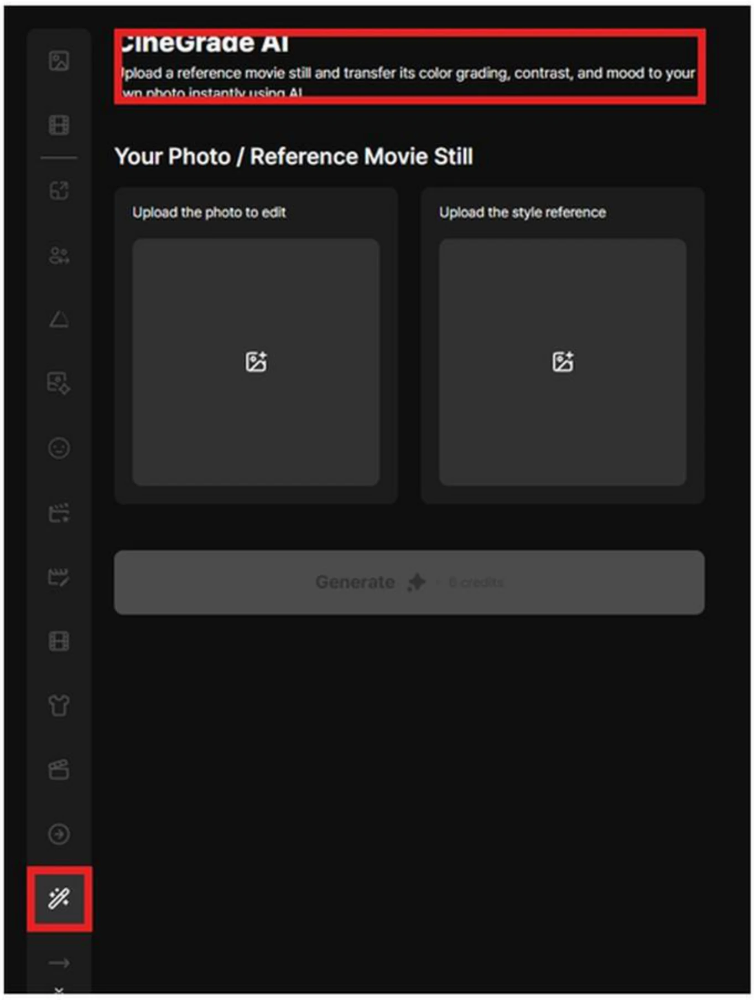
Your Photo / Reference Movie Still 区域会并排显示两个上传框。左边是要编辑的照片，右边是决定色彩与氛围的风格参考。 Generate 按钮在两张图像就绪之前保持不可用。
放置要调色的 原照片的框。它提供结果的构图与主体。
style reference （电影剧照，或任何你喜欢的色调的图像）所用的框。它决定结果的色彩、对比度和氛围。
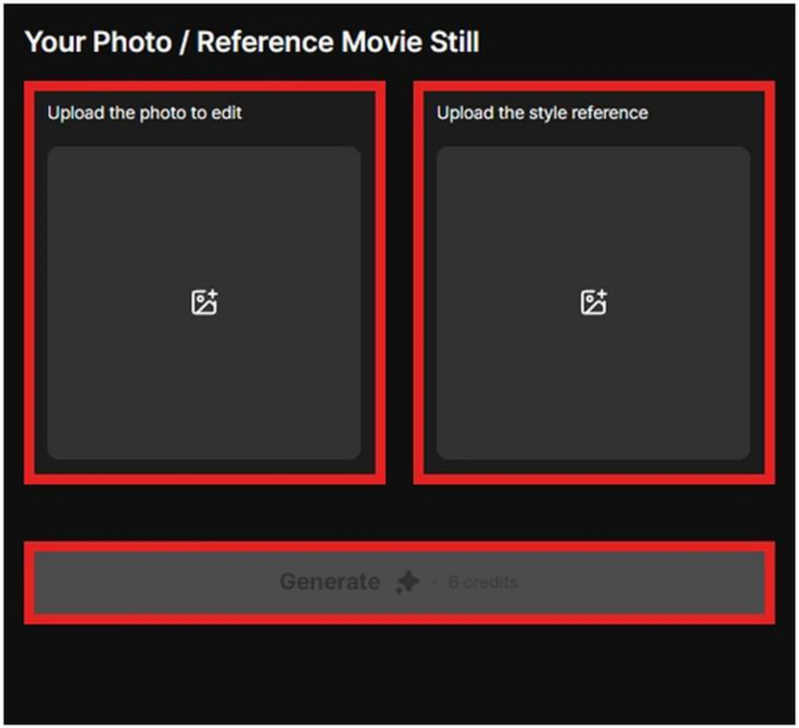
左侧框用于上传要调色的原照片。主体清晰、背景干净、曝光稳定的照片，更容易评估叠加参考调色后的效果。
点击左侧框或拖放文件，上传要调色的照片。上传后，框内的占位图会被预览替换。
主体与背景清晰，且 曝光稳定的照片更容易评估调色。严重欠曝或过曝的镜头会让色调变化难以辨认。
上传的照片可用框右上角的 X 按钮移除并替换。
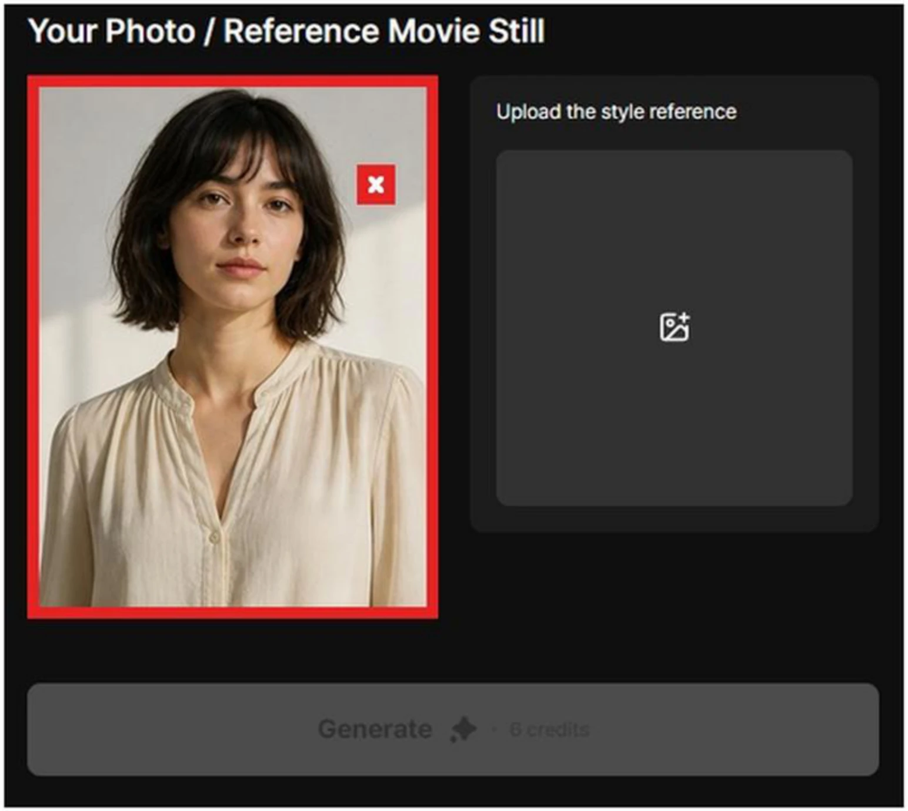
右侧框用于电影剧照或任何带有你想要色调的图像。参考承载的是色彩、对比度和光线氛围，而不是构图。
参考把 色彩、对比度和光线氛围 传递给结果。这是一条视觉指令： 「给我这种色调」，而不是 「给我这个构图」。
色调方向明确 的图像（暖调、冷调、电影感、高对比）效果最好。电影剧照、广告主视觉、艺术照片都可以。
已上传的参考可通过框右上角的 X 按钮移除，并换成另一张。
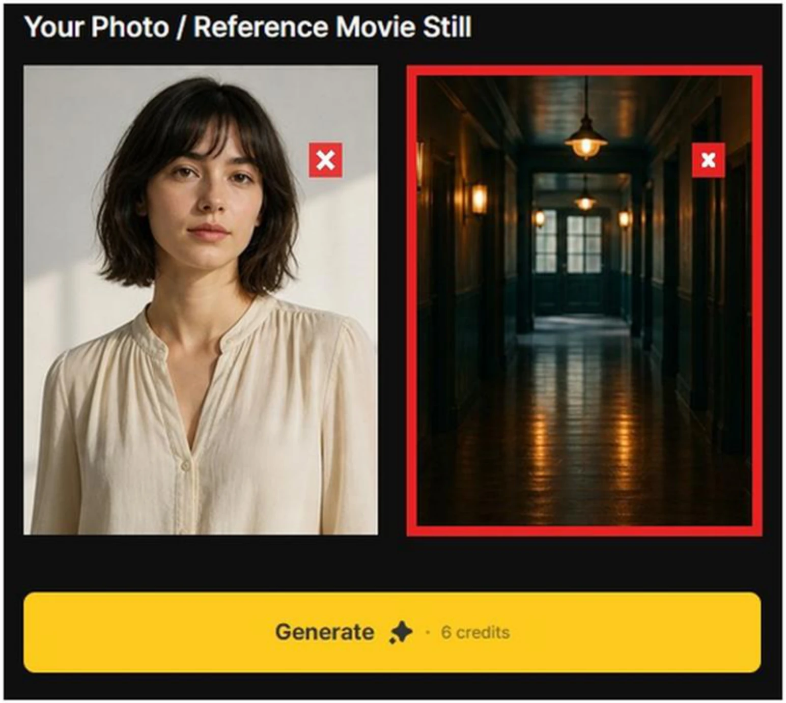
原照片与风格参考都上传后， Generate 就会激活。在该状态下，AI 保留左图的主体，同时套用右图的色彩氛围与对比度。
两个框都填写后， Generate 按钮变为黄色并可用，可从该状态启动调色。
AI 保留左图的 主体、构图和细节 ，同时把 右图的色彩氛围与对比度 作为输入信号。
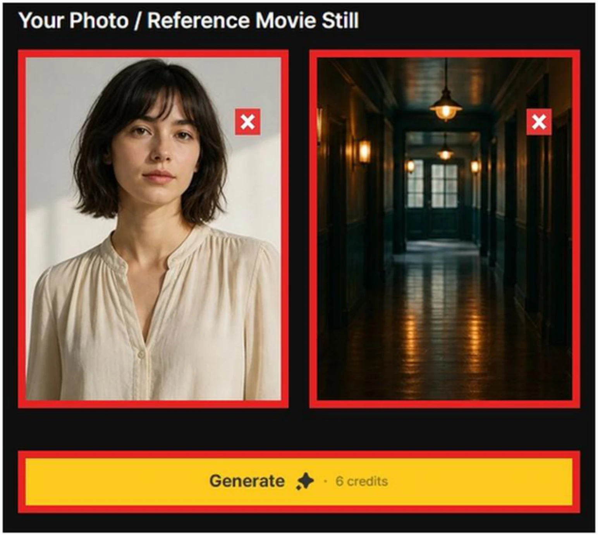
按下每个上传框右上角的 X 按钮即可删除该图像。用于换掉错误的照片或替换参考。
每个上传框的右上角都有一个红色的 X 按钮。按下即可删除该图像。
用于换掉错误的照片，或把参考换成另一种色调。若只删除一侧，Generate 会再次变为不可用。
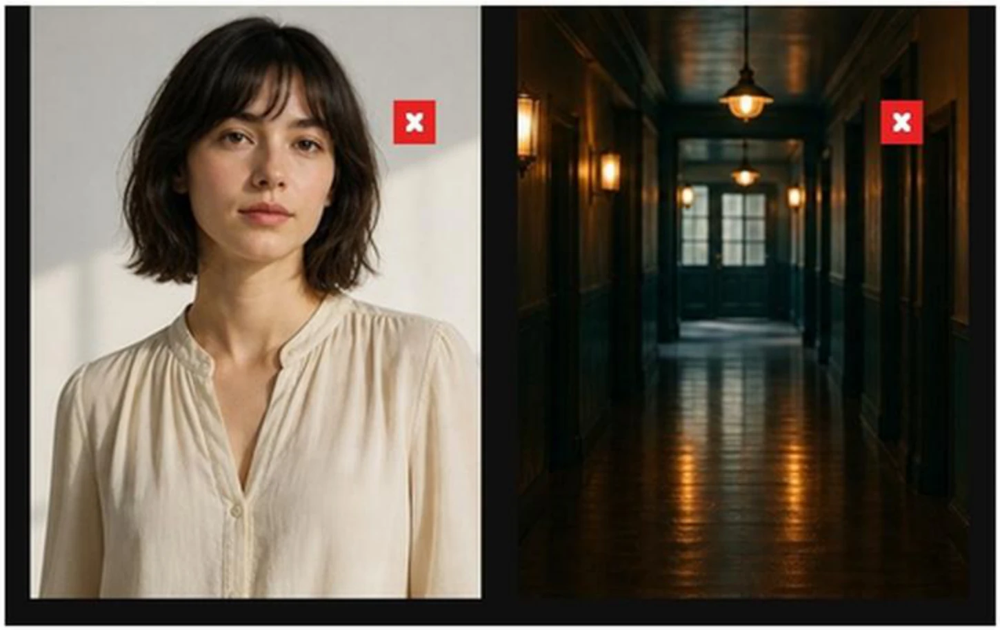
两张图像都上传后，按下 Generate 开始色彩迁移。在当前测试界面，每次生成使用 6 积分。
Your Photo 和 Reference Movie Still 两个框都必须填写，Generate 才会激活。
每次生成扣除 6 积分 （当前测试界面）。若积分余额不足则不会执行生成。
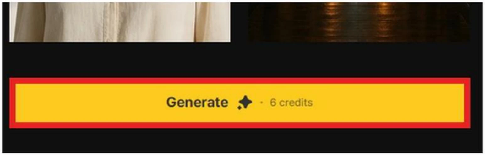
Generate 会打开「Would you like to generate an image?」确认框。 OK 开始生成； Cancel 返回上一界面。
OK 会真正启动生成并扣除积分。运行过程中结果区域会显示进度。
Cancel 不生成直接返回上一界面。两张已上传的图像都会保留，因此可以立即修改重试。
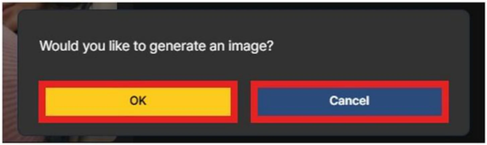
生成完成后，转换后的图像会以卡片形式出现在右侧结果区域。结果卡片保留原照片的主体，同时反映参考的色彩与氛围。
每次生成完成后，右侧结果区域都会新增一张卡片，内含刚调好色的图像。
用不同参考多次生成即可堆叠结果卡片，在同一视图比较同一张照片的 多个色调候选 。
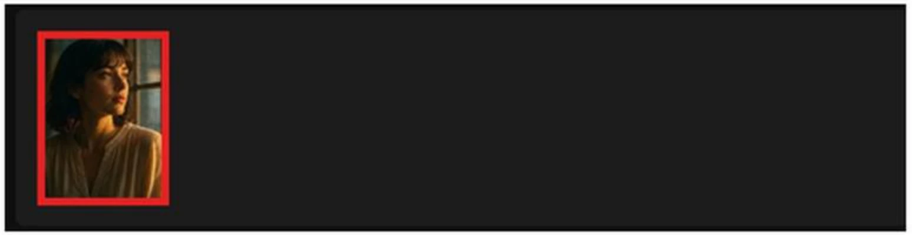
最终图像是把参考剧照的暖光与电影感对比度套用到原照片上的结果。最终使用前，请确认脸部色调、服装颜色、背景亮度和整体对比度符合你的意图。
输出保留照片的 主体、构图和细节。只有色彩改变 —— 照片内容保持一致。
参考的 光线氛围、色调与对比度 会叠加到结果上。结果不一定 100% 一致 —— 多生成几版并挑选最好的一版。
最终使用前，确认 脸部色调、服装颜色、背景亮度和整体对比度 符合意图。若图像变得过暗或过于饱和，换另一个参考重新生成。
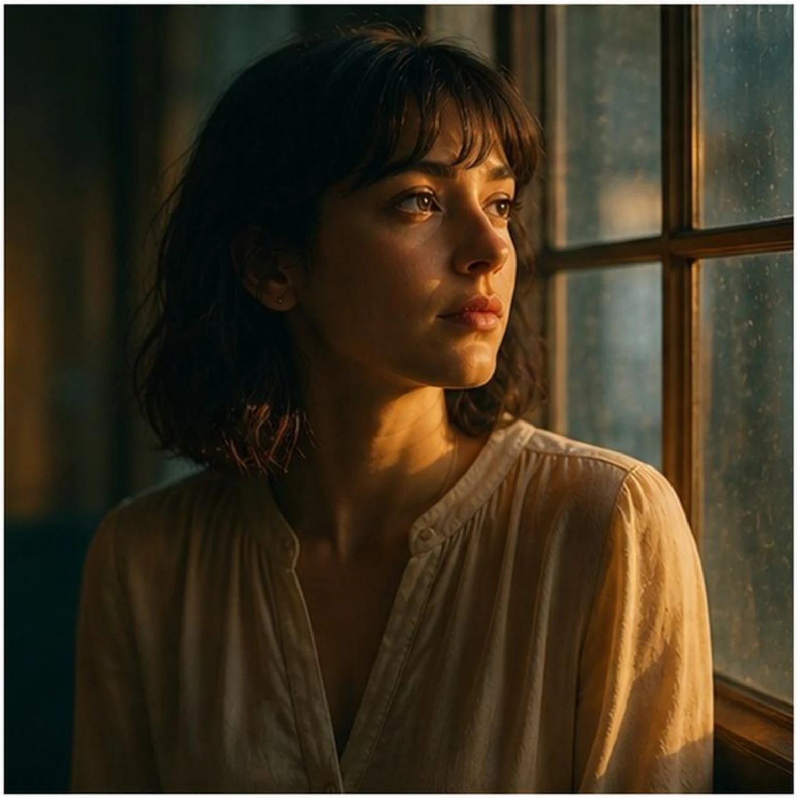
将鼠标悬停在结果图像上会显示下载和删除图标。下载会保存结果；删除会移除所选结果。
download icon 会把结果图像保存为本地文件。适合准备带到应用之外的候选图。
delete icon 会删除所选结果卡片。清除不采用的色调候选能让结果面板保持整洁。
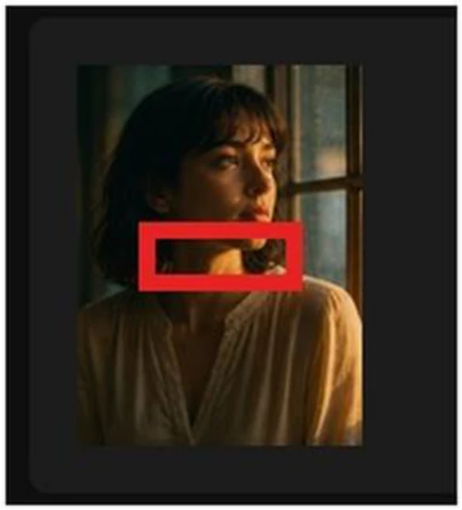
按下删除图标会打开「Delete this media?」确认框。 Delete 会删除它； Cancel 会保留结果。
Delete 会永久删除所选卡片。已删除的结果无法恢复，请谨慎确认。
Cancel 会让卡片保持不变。在与其他色调比较完成之前，保留候选更安全。
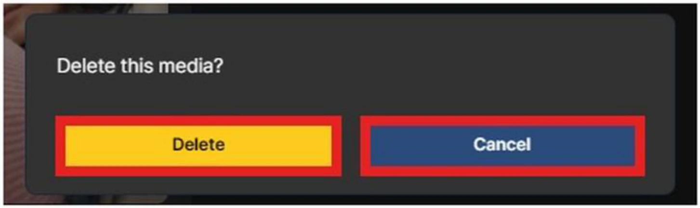